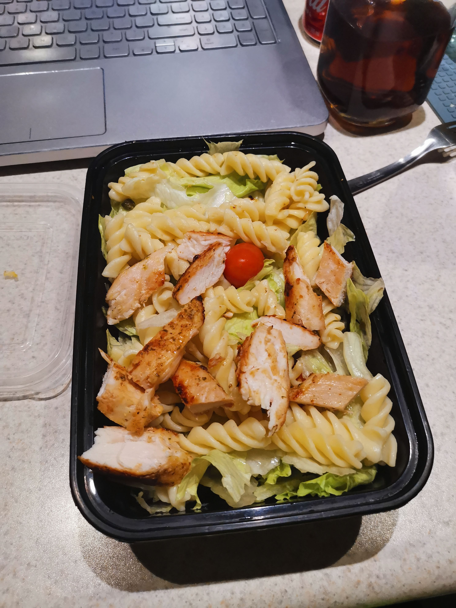

Chicken salad

Description
So when wanting something full of flavour that is also nutritious and fresh that won't bog you down,you can't go better than with Chicken salad.
One of the strong points of this dish is that although we suggest a simple vinagrete, this dish is so versatile that any flavoured dressing goes with it so you can add any flavour you fancy.
Ingredients
- Chopped lettuce (Caesar salad style).
- 300gm of fussilli pasta.
- 10 to 12 pearl or roma tomatoes.
- 200 gm of chicken breast stripes.
- Handfull of fresh caper.
- 15 ml cooking oil.
- 5ml vinagrete or preferred dressing.
Steps
- Spread the cooking oil on a pan and heat up.
- Fill a cooking pot half way up with water and bring it to boiling point.
- Cook the chicken breast stripes until they are done well and place in a mixing dish.
- Once cooked, take out the pasta from the cooking pot and drain any excess water.
- Add in the pasta,lettuce,tomatoes and caper with the chicken.
- Add in your preferred dressing to finish off.
- Enjoy and provecho!